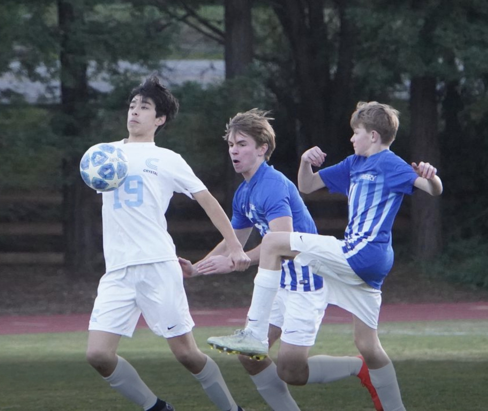
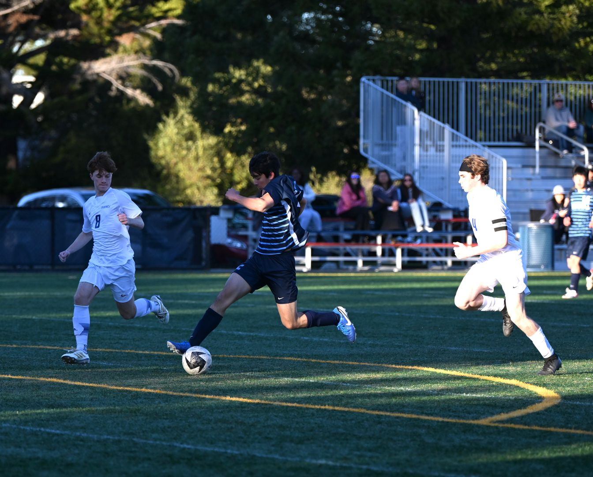
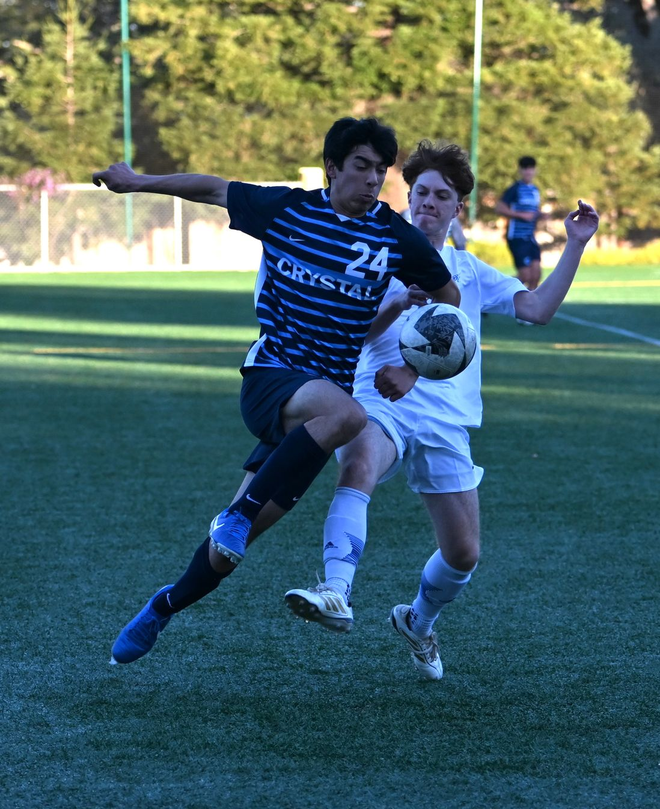
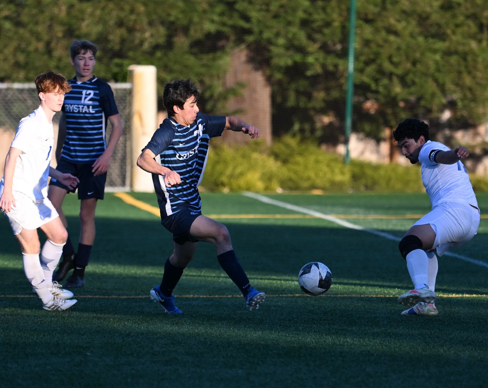
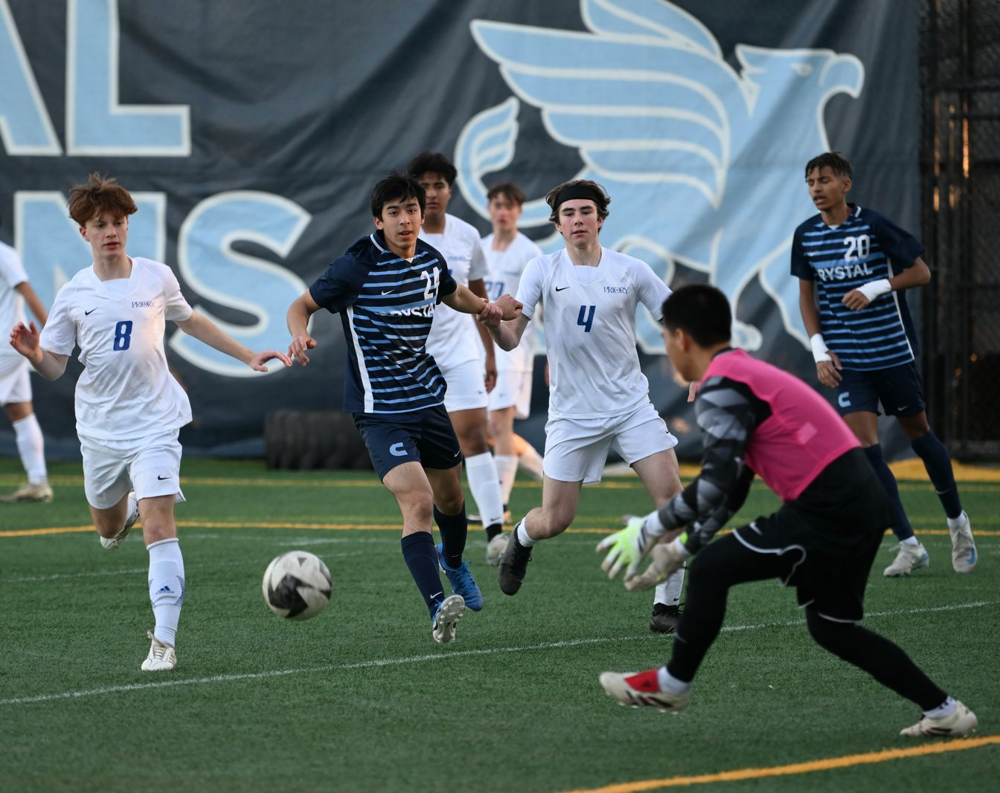
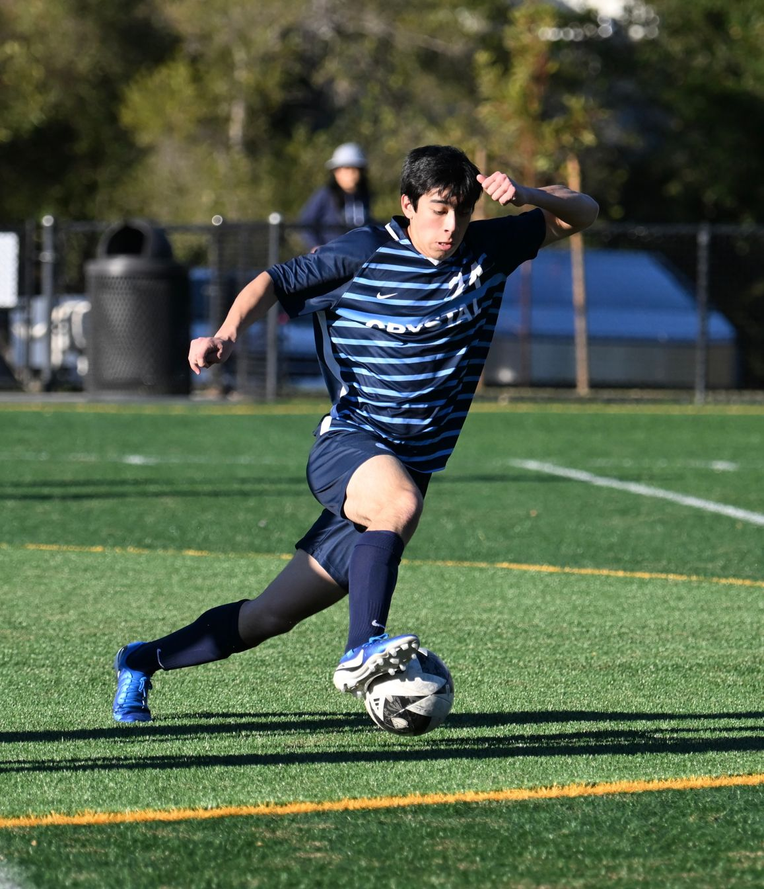
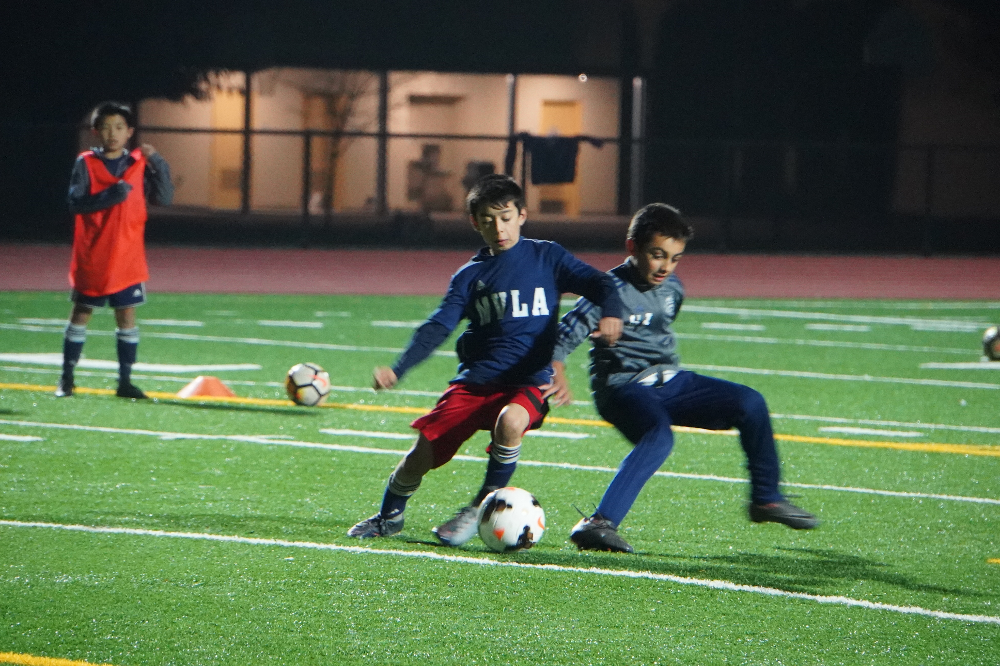

Profile
5'10"
Height
155 lb
Weight
Class of '26
Year
3×
WBAL All-League
CIF State
XC + Track
Sports
⚽ Soccer ▼
Position
- Outside Defender · Center Defender · Center Forward
High School
- 2024–2025: Varsity Starter, 11th Grade — CCS Finalists
- 2023–2024: JV Captain + Varsity Starter, 10th Grade
- 2022–2023: JV Starter, 9th Grade — WBAL Champions
Middle School
- 2021–2022*: Varsity Starter, 8th Grade — WBAL Champions
- 2019–2020*: JV Starter, 6th Grade — WBAL Champions
* Crystal MS soccer was undefeated these two seasons. 7th grade cancelled due to COVID-19.
Club
- 2022–'24: WSC Crush 07, National Premier League (#15)
- 2019–'21: MVLA 07 Navy, Norcal Premier (#9)
- 2013–'19: MVLA 07 White (U7–U13), Norcal Gold (#9)
Honors
- Feb 2025 — V WBAL Champions, CCS Finalists (11th Grade)
- Feb 2023 — JV WBAL Champions (9th Grade)
- Dec 2022 — WBAL Champions (8th Grade)
- Dec 2019 — WBAL Champions (6th Grade)
- Mar 2019 — Santa Cruz Spring Cup Champions, MVLA 07 White
- Aug 2018 — Santa Cruz Fall Cup, 2nd Place
- Jun 2018 — Cal N Dist 11 Spring Cup, 2nd Place
- Apr 2018 — Bay Area Spring Cup Champions
- Apr 2017 — Bay Area Spring Cup Champions
- May 2016 — Cal N Dist 11 Spring Cup Champions
- Nov 2014 — Cal N Dist 11 Fall Cup Champions
🏃 Running ▼
High School
- Spring 2025: Varsity Track & Field (3rd fastest), 11th Grade
- Fall 2024: Varsity Cross Country (5th fastest), 11th Grade
- Spring 2024: Varsity Track & Field, 10th Grade
- Fall 2023: JV Cross Country, 10th Grade
- Spring 2023: Varsity Track & Field, 9th Grade
Honors
- Spring 2025 — CIF State Track: 12th place team (4x800: 7:53); split 49 in 4x400 for CCS Qualifier (team scratched)
- Fall 2024 — CIF State Cross Country: 3rd place team (5th runner)
- Spring 2024 — CCS Finalist 4x400m; School Record 3:25.87 (split 51.99)
- Spring 2023 — WBAL Finalist 400m (56s)
In Action






